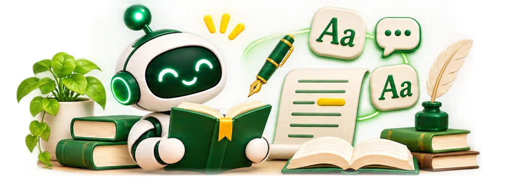

Opravujte slohy, generujte diktáty, analyzujte literaturu a tvořte gramatická cvičení s pomocí AI. Ušetřete hodiny opravování.
🎯6 aktivit
✨4 promptů
🤖3 AI nástroje
🏫ZŠ · SŠ

Ročník:
Zobrazeno 6 z 6 aktivit
Claude6.–9. ročník
✍️
Formativní zpětná vazba ke slohu
AI navrhne učiteli konkrétní formativní komentář k modelovému textu nebo textu zpracovanému ve školou schváleném režimu; konečnou zpětnou vazbu a hodnocení určuje učitel.
⏱ 2 min/žák📝 Sloh
ChatGPT6.–9. ročník
🎧
Generátor diktátů
AI vygeneruje diktáty zaměřené na konkrétní gramatické jevy s různou úrovní obtížnosti a klíčem.
⏱ 5 min příprava🏫 Třída
GeminiSŠ
📚
Literární rozbor díla
Gemini provede komplexní literární rozbor díla – žánr, téma, postavy, kompozici, jazykové prostředky a historický kontext.
⏱ 10 min příprava👤 Individuální
ChatGPT1.–5. ročník
🔤
Cvičení vyjmenovaných slov
AI vygeneruje kreativní cvičení a příběhy procvičující vyjmenovaná slova zábavnou formou pro mladší žáky.
⏱ 5 min příprava🏫 Třída
ClaudeSŠ
🗣️
Orientační nácvik maturitního rozhovoru
AI vede cvičný rozhovor k literárnímu dílu a nabízí průběžnou formativní zpětnou vazbu. Nejde o oficiální maturitní kritéria, známku ani předpověď výsledku.
⏱ 20 min aktivita👤 Individuální
ChatGPT6.–9. ročník
📝
Asistent pro tvorbu slohových útvarů
Žáci dostávají krok-za-krokem průvodce pro psaní různých slohových útvarů – líčení, popis, vypravování, charakteristika.
⏱ 15 min aktivita👤 Individuální
Opravovač slohu s konstruktivní zpětnou vazbou
Claude6.–9. ročník
Oprav tuto slohovou práci žáka [ROČNÍK]. Zaměř se na: 1) gramatiku a pravopis, 2) stavbu vět a odstavců, 3) vhodnost slovní zásoby, 4) splnění zadání. Pro každou skupinu chyb uveď počet, příklady a správnou variantu. Na závěr: celkové zhodnocení (2–3 věty) a 3 konkrétní tipy na zlepšení. TEXT: [VLOŽTE TEXT]
Generátor diktátu s klíčem
ChatGPTZŠ
Vytvoř diktát pro žáky [ROČNÍK] zaměřený na [GRAMATICKÝ JEV]. Délka: cca [POČET] slov. Text musí být tematicky zajímavý pro žáky. Přidej: opravný klíč (označení správných písmen), seznam klíčových slov s pravidlem a 3 cvičné věty jako rozcvičení před diktátem.
Literární rozbor – kompletní šablona
GeminiSŠ
Proveď literární rozbor díla „[NÁZEV]“ od [AUTOR]. Struktura: 1) Bibliografické údaje, 2) Literární druh a žánr, 3) Téma, motiv, hlavní myšlenka, 4) Charakteristika postav, 5) Kompozice a struktura, 6) Jazykové prostředky, 7) Historický a společenský kontext, 8) Osobní hodnocení díla. Vhodné pro přípravu na maturitu.
Průvodce psaním slohového útvaru
ClaudeZŠ/SŠ
Pomoz mi napsat [SLOHOVÝ ÚTVAR: líčení/popis/vypravování/charakteristika/úvaha] na téma [TÉMA] pro žáka [ROČNÍK]. Nejprve vysvětli strukturu tohoto útvaru, pak uveď osnovu, klíčová jazyková spojení typická pro tento útvar a nakonec ukázkový odstavec jako inspiraci. Nestyl za mě celý text.
🟠
Claude
Anthropic · Claude 3.5 Sonnet
Nejlepší volba pro opravování slohů a tvorbu strukturovaných
zpětných vazeb. Claude exceluje v porozumění jazykové kvalitě textu.
Opravování slohůZpětná vazba
🟢
ChatGPT
OpenAI · GPT-4o
Výborný pro generování diktátů, cvičení a výuku gramatiky. Zvládá i
rozbor literárních textů a tvorbu testů.
DiktátyGramatika
🔵
Gemini
Google
Vhodný pro literární rozbory díky přístupu k aktuálním informacím.
Gemini zvládne kontext díla v rámci doby i aktuálního výkladu.
LiteraturaKontext
💡
Tip: Claude je král opravováníPro opravování
slohových prací je Claude výrazně lepší než ostatní modely – lépe rozumí stylistickým
nuancím češtiny a dává konkrétnější zpětnou vazbu.
📝
Tip: Vždy specifikujte slohový útvarAI potřebuje
vědět, jaký slohový útvar opravuje – jinak hodnotí každý text stejně. Vždy napište: "Toto je
[útvar] pro žáka [ročník]."
⚠️
Upozornění: Citlivost dat žákůPřed vložením slohu
žáka do AI odstraňte nebo anonymizujte osobní údaje (jméno, škola, třída). Dodržujte GDPR.